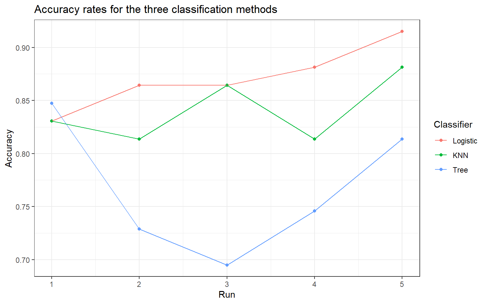
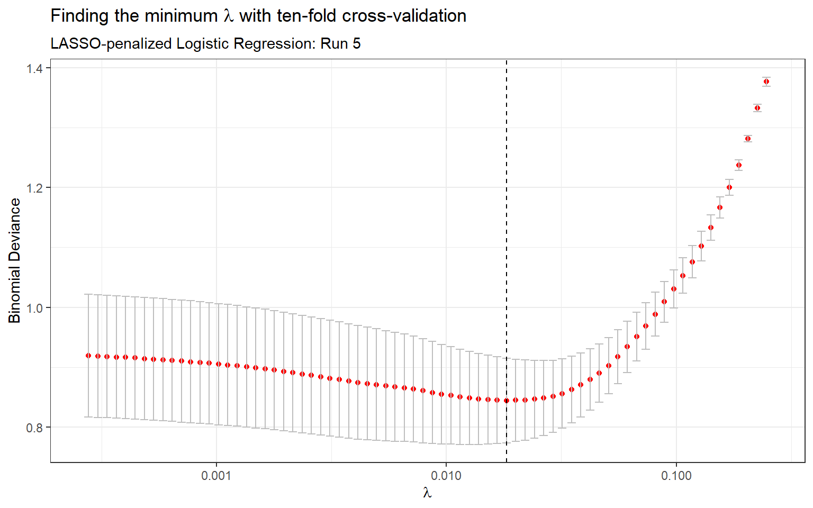
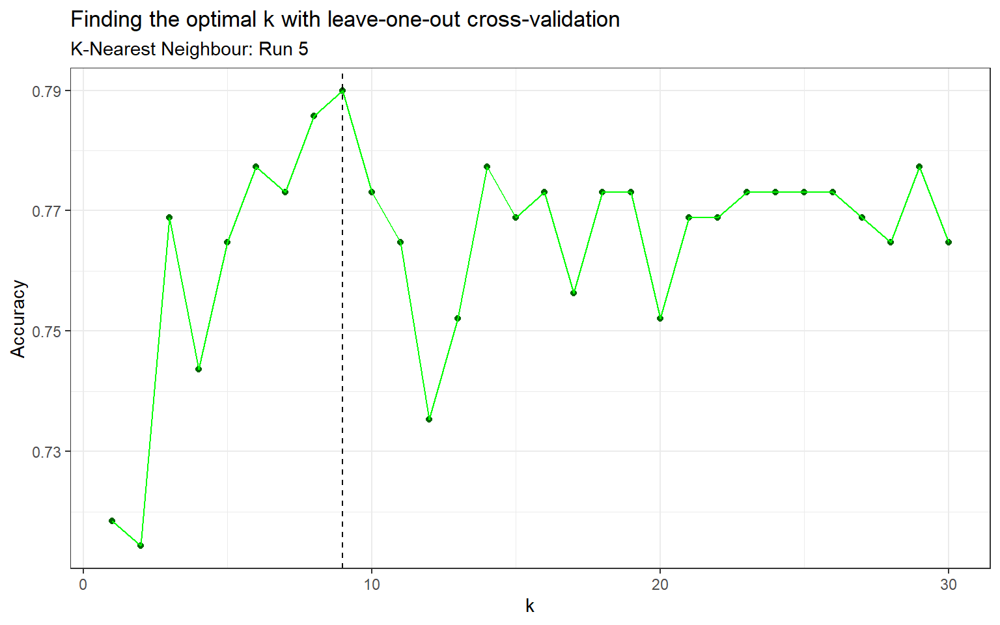
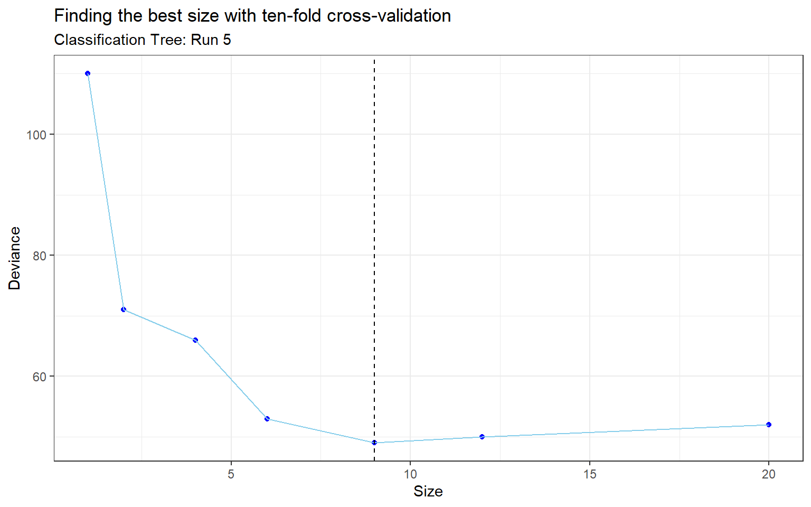

The heart disease data set (or Cleveland database) is part of a larger collection of databases on heart disease diagnosis. The heart disease data set was downloaded from the UCI Machine Learning Repository and used in the following analysis to classify whether or not an individual has heart disease, which could have important implications for classification and predictive modelling in the field of medicine.
The main objective of this analysis is to assess the performance of three different classification methods: logistic regression with regularization, k-nearest neighbours and classification trees. The secondary objective of this analysis is to train a model that can be used for classification of future observations, using the best of the three methods.
In the Methods section, three classification methods are discussed. Each classifier uses the diagnosis of heart disease as the response variable, with the remaining thirteen variables as the predictors. In the results section, the performance of the three methods are compared and a final classification model is trained for future predictions. Finally, the methods and results are further interpreted in the Discussion section and dealing with heart disease misdiagnosis is discussed.
The heart disease data set contains 303 observations with some missing values, so complete case analysis was used to reduce the number of observations to 297. Table 1 contains a written description of the fourteen variables and Table 2 contains a detailed summary of the data set. The response variable is num - the diagnosis of heart disease (yes/no), while the remaining thirteen variables are the predictors. The response variable along with the thirteen predictors are used in each of the classification methods.
To compare the classifiers while accounting for randomness, the data was randomly split into training and test sets five times, and the accuracy rates were recorded for each run. 80% of the data was used to train the models, and the remaining 20% was used to evaluate their performance. Accuracy is the chosen criterion for assessing the performance of the classifiers since it is straightforward and easy to understand for non-technical readers.
The first classification model is logistic regression with regularization. In the logistic regression model, the probability of heart disease given the predictors \(X_i\) is calculated as follows: \[ P(Y=1|X_i) = \frac{\exp(\beta_0 + \beta_1 X_{i1} + \cdots + \beta_k X_{ik})}{1 + \exp(\beta_0 + \beta_1 X_{i1} + \cdots + \beta_k X_{ik})} \] There are several regularization methods for regression, including ridge regression and LASSO. For this analysis we used LASSO (least absolute shrinkage and selection operator), as this form of regularization shrinks predictors to zero and is consequently a feature selection method. This makes the penalized model much more simpler as it will contain fewer predictors. The LASSO coefficients minimize the negative log likelihood subject to \(\sum_{j=1}^k |\beta_j| \leq \lambda\), where \(\lambda\) is the penalty term or tuning parameter. Ten-fold cross-validation was used to find the minimum \(\lambda\) (Appendix: Table 4 & Figure 2).
The second classifier is k-nearest neighbours (KNN). This method takes the k nearest points to the new point, then classifies the point by a majority vote of its \(k\) neighbours. In simpler terms, this algorithm takes unlabeled points and assigns them to the class that contains similar labeled examples. K-nearest neighbours uses a Euclidean distance by default, with classification decided by majority vote and ties broken at random. Due to the nature of KNN as a distance based algorithm, is it important to scale the continuous variables so that the distance is not biased towards the variables with larger values. There are a few types of scaling methods including normalization which was used in this analysis. The algorithm also requires that we specify \(k\), the number of neighbours considered. One method to find the optimal \(k\) is leave-one-out cross-validation (Appendix: Table 5 & Figure 3).
The third method for classification is a classification tree (also known as a decision tree). Classification trees use binary recursive partitioning, where the data is partitioned in an iterative manner at each node. A node is where the branch of a tree splits into two parts, and the terminal nodes are called leaves. These leaves are assigned class membership probabilities which can be used to classify new data. After the classification tree was trained, a technique called pruning was used to remove the least important branches as the model can be quite complex which leads to overfitting. When pruning the tree, a parameter called best (size or number of terminal nodes of a subtree to be returned) was passed into the function in order to specify the size of pruned tree. The best size was determined via ten-fold cross-validation (Appendix: Table 6 & Figure 4).
| Variable | Description |
|---|---|
| age | age in years |
| sex | sex (1 = male; 0 = female) |
| cp | chest pain type (1 = typical angina; 2 = atypical angina; 3 = non-anginal pain; 4 = asymptomatic) |
| trestbps | resting blood pressure (in mm Hg on admission to the hospital) |
| chol | serum cholestoral in mg/dl |
| fbs | fasting blood sugar > 120 mg/dl (1 = true; 0 = false) |
| restecg | resting electrocardiographic results (0 = normal; 1 = having ST-T wave abnormality; 2 = showing probable or definite left ventricular hypertrophy) |
| thalach | maximum heart rate achieved |
| exang | exercise induced angina (1 = yes; 0 = no) |
| oldpeak | ST depression induced by exercise relative to rest |
| slope | the slope of the peak exercise ST segment (1 = upsloping; 2 = flat; 3 = downsloping) |
| ca | number of major vessels (0-3) colored by flourosopy |
| thal | thalassemia (3 = normal; 6 = fixed defect; 7 = reversable defect) |
| num | diagnosis of heart disease (1 = yes; 0 = no) |
| Total (N=297) | No Heart Disease | Has Heart Disease | |
|---|---|---|---|
| Age | |||
| Median (IQR) | 56 (48, 61) | 52 (45, 59) | 58 (53, 62) |
| Sex | |||
| Male | 201 (68%) | 89 (56%) | 112 (82%) |
| Female | 96 (32%) | 71 (44%) | 25 (18%) |
| Chest pain type | |||
| Typical Angina | 23 (8%) | 16 (10%) | 7 (5%) |
| Atypical angina | 49 (16%) | 40 (25%) | 9 (7%) |
| Non-anginal pain | 83 (28%) | 65 (41%) | 18 (13%) |
| Asymptomatic | 142 (48%) | 39 (24%) | 103 (75%) |
| Resting blood pressure (mm Hg) | |||
| Median (IQR) | 130 (120, 140) | 130 (120, 140) | 130 (120, 145) |
| Serum cholestoral (mg/dl) | |||
| Median (IQR) | 243 (211, 276) | 236 (209, 268) | 253 (218, 284) |
| Fasting blood sugar (mg/dl) | |||
| >120 mg/dl | 43 (14%) | 23 (14%) | 20 (15%) |
| <= 120 mg/dl | 254 (86%) | 137 (86%) | 117 (85%) |
| Resting electrocardiographic results | |||
| Normal | 147 (49%) | 92 (58%) | 55 (40%) |
| ST-T wave abnormality | 4 (1%) | 1 (1%) | 3 (2%) |
| Left ventricular hypertrophy | 146 (49%) | 67 (42%) | 79 (58%) |
| Maximum heart rate achieved | |||
| Median (IQR) | 153 (133, 166) | 161 (149, 172) | 142 (125, 157) |
| Exercise induced angina | |||
| Yes | 97 (33%) | 23 (14%) | 74 (54%) |
| No | 200 (67%) | 137 (86%) | 63 (46%) |
| ST depression induced by exercise | |||
| Median (IQR) | 0.8 (0.0, 1.6) | 0.2 (0.0, 1.1) | 1.4 (0.6, 2.5) |
| Slope of the peak exercise ST segment | |||
| Normal | 139 (47%) | 103 (64%) | 36 (26%) |
| ST-T wave abnormality | 137 (46%) | 48 (30%) | 89 (65%) |
| Left ventricular hypertrophy | 21 (7%) | 9 (6%) | 12 (9%) |
| # of major vessels colored by flourosopy | |||
| 0 | 174 (59%) | 129 (81%) | 45 (33%) |
| 1 | 65 (22%) | 21 (13%) | 44 (32%) |
| 2 | 38 (13%) | 7 (4%) | 31 (23%) |
| 3 | 20 (7%) | 3 (2%) | 17 (12%) |
| Thalassemia | |||
| Normal | 164 (55%) | 127 (79%) | 37 (27%) |
| Fixed Defect | 18 (6%) | 6 (4%) | 12 (9%) |
| Reversable Defect | 115 (39%) | 27 (17%) | 88 (64%) |
| Diagnosis of Heart Disease | |||
| No | 160 (54%) | 160 (100%) | 0 (0%) |
| Yes | 137 (46%) | 0 (0%) | 137 (100%) |
In Figure 1, the accuracy rates of the three classification methods for the five independent runs are shown. In four out of five runs, LASSO-penalized logistic regression had the highest accuracy rate, making it the preferred classifier among the three options. The k-nearest neighbour classifier had the joint highest accuracy in Run 3 and had the second highest accuracy in three of five runs. The classification tree scored the highest in Run 1 but had the lowest accuracy in the remaining four runs. In the Appendix, Table 7 contains the accuracy rates for each run and Table 8 summarizes the overall results by taking the average accuracy rates of the three methods. Logistic regression with LASSO regularization is the clear winner, followed by k-nearest neighbour and finally classification tree in last place.
Figure 1: Accuracy rates for the three classification methods
Based on the assessment of the performance of the three classification methods, a LASSO-penalized logistic regression model was then trained to be used for classification of future observations. Previously, the data was split into training and test sets, however this model was trained on the entire data set because it will be used to predict on future observations which can be treated as our test set, as the model has not seen this new data. The coefficients of the predictors are shown in Table 3 below. It is interesting to note that the coefficients of the predictors age, cp3, slope3 and thal6 have been shrunk to zero. There are also several coefficients that are close to zero, most notably trestbps, chol, restecg1, thalach. The descriptions for these variables can be found in Table 1.
| Predictor | Coefficient |
|---|---|
| (Intercept) | -4.624 |
| age | 0.000 |
| sex1 | 1.132 |
| cp2 | 0.480 |
| cp3 | 0.000 |
| cp4 | 1.656 |
| trestbps | 0.016 |
| chol | 0.002 |
| fbs1 | -0.173 |
| restecg1 | 0.007 |
| restecg2 | 0.307 |
| thalach | -0.014 |
| exang1 | 0.526 |
| oldpeak | 0.384 |
| slope2 | 0.823 |
| slope3 | 0.000 |
| ca1 | 1.629 |
| ca2 | 2.184 |
| ca3 | 1.511 |
| thal6 | 0.000 |
| thal7 | 1.262 |
Using the heart disease data set, the five repeated runs for our specific analysis came to a consensus that the LASSO-penalized logistic regression classifier was the best performer, followed by k-nearest neighbour and lastly classification tree. Due to the randomness of the splits of the training and test data as well as cross-validation to tune the parameters, a seed was set to ensure reproducibility. Without setting a seed, the results would vary each time the algorithms are trained and used for prediction - the performance of the three classifiers would change. This means that we cannot necessarily conclude that one classifier is better than the others in general based on these results. However, it is comforting knowing that the results achieved in this analysis are quite promising and that these are just three of the numerous possible classification methods that can be used for heart disease diagnosis.
In the field of medicine, there are important considerations that may affect how we approach a classification problem. For instance, if a false negative (i.e. individuals with heart disease incorrectly identified as healthy) is more costly than a false positive (i.e. healthy individuals incorrectly identified as having heart disease), then the classifier must be adjusted appropriately. One strategy is to set the predicted probability threshold lower, so that more individuals will be classified as having heart disease. This will increase the false positive rate and decrease the false negative rate. As an example, one can first obtain the predicted probabilities from the predict() function, then instead of assigning the predictions to class 0 or class 1 based on the threshold of 0.5 we can set the threshold to a smaller value such as 0.4. That means that if the predicted probability is greater than 0.4, the individual would be assigned to class 1 (having heart disease). A lower predicted probability threshold such as 0.4 ensures more individuals are classified as having heart disease compared to a threshold of 0.5.
| Run | 1 | 2 | 3 | 4 | 5 |
|---|---|---|---|---|---|
| lambda | 0.009 | 0.015 | 0.013 | 0.012 | 0.018 |
| Run | 1 | 2 | 3 | 4 | 5 |
|---|---|---|---|---|---|
| k | 3 | 9 | 12 | 5 | 9 |
| Run | 1 | 2 | 3 | 4 | 5 |
|---|---|---|---|---|---|
| size | 6 | 7 | 2 | 9 | 9 |
| Run | Logistic Regression | K-Nearest Neighbour | Classification Tree |
|---|---|---|---|
| 1 | 0.831 | 0.831 | 0.847 |
| 2 | 0.864 | 0.814 | 0.729 |
| 3 | 0.864 | 0.864 | 0.695 |
| 4 | 0.881 | 0.814 | 0.746 |
| 5 | 0.915 | 0.881 | 0.814 |
| Logistic Regression | K-Nearest Neighbour | Classification Tree |
|---|---|---|
| 0.871 | 0.841 | 0.766 |
Figure 2: Finding the minimum \(\lambda\) with ten-fold cross-validation (Run 5)
Figure 3: Finding the optimal k with leave-one-out cross-validation (Run 5)
Figure 4: Finding the best size with ten-fold cross-validation (Run 5)
James, G., Witten, D., Hastie, T., & Tibshirani, R. (2013). An introduction to statistical learning.
# Load packages and set theme
library(tidyverse)
library(caret)
library(glmnet)
library(class)
library(tree)
library(knitr)
library(qwraps2)
library(latex2exp)
library(reshape2)
theme_set(theme_bw())
# Load data, rename variables and use complete cases
cleveland <- read.csv("./files/cleveland.txt", header = F, na.strings = "?")
data <- cleveland %>%
summarise(age = V1, sex = as.factor(V2), cp = as.factor(V3), trestbps = V4,
chol = V5, fbs = as.factor(V6), restecg = as.factor(V7),
thalach = V8, exang = as.factor(V9), oldpeak = V10,
slope = as.factor(V11), ca = as.factor(V12), thal = as.factor(V13),
num=as.factor(case_when(V14 %in% c(1,2,3,4) ~ 1,
TRUE ~ 0))) %>%
na.omit()
# Variable description
variables <- colnames(data)
description <- c("age in years",
"sex (1 = male; 0 = female)",
"chest pain type (1 = typical angina; 2 = atypical angina; 3 = non-anginal pain; 4 = asymptomatic)",
"resting blood pressure (in mm Hg on admission to the hospital)",
"serum cholestoral in mg/dl",
"fasting blood sugar > 120 mg/dl (1 = true; 0 = false)",
"resting electrocardiographic results (0 = normal; 1 = having ST-T wave abnormality; 2 = showing probable or definite left ventricular hypertrophy)",
"maximum heart rate achieved",
"exercise induced angina (1 = yes; 0 = no)",
"ST depression induced by exercise relative to rest",
"the slope of the peak exercise ST segment (1 = upsloping; 2 = flat; 3 = downsloping)",
"number of major vessels (0-3) colored by flourosopy",
"thalassemia (3 = normal; 6 = fixed defect; 7 = reversable defect)",
"diagnosis of heart disease (1 = yes; 0 = no)")
cbind(variables,description) %>%
kable(caption = "Heart Disease Data Set",
col.names = c("Variable", "Description"),
padding = 10)
# Detailed summary of data
summary <-
list("Age" =
list("Median (IQR)" = ~ median_iqr(age, digits = 0)
),
"Sex" =
list("Male" = ~ n_perc(sex == 1, digits = 0),
"Female" = ~ n_perc(sex == 0, digits = 0)
),
"Chest pain type" =
list("Typical Angina" = ~ n_perc(cp == 1, digits = 0),
"Atypical angina" = ~ n_perc(cp == 2, digits = 0),
"Non-anginal pain" = ~ n_perc(cp == 3, digits = 0),
"Asymptomatic" = ~ n_perc(cp == 4, digits = 0)
),
"Resting blood pressure (mm Hg)" =
list("Median (IQR)" = ~ median_iqr(trestbps, digits = 0)
),
"Serum cholestoral (mg/dl)" =
list("Median (IQR)" = ~ median_iqr(chol, digits = 0)
),
"Fasting blood sugar (mg/dl)" =
list(">120 mg/dl" = ~ n_perc(fbs == 1, digits = 0),
"<= 120 mg/dl" = ~ n_perc(fbs == 0, digits = 0)
),
"Resting electrocardiographic results" =
list("Normal" = ~ n_perc(restecg == 0, digits = 0),
"ST-T wave abnormality" = ~ n_perc(restecg == 1, digits = 0),
"Left ventricular hypertrophy" = ~ n_perc(restecg == 2, digits = 0)
),
"Maximum heart rate achieved" =
list("Median (IQR)" = ~ median_iqr(thalach, digits = 0)
),
"Exercise induced angina" =
list("Yes" = ~ n_perc(exang == 1, digits = 0),
"No" = ~ n_perc(exang == 0, digits = 0)
),
"ST depression induced by exercise" =
list("Median (IQR)" = ~ median_iqr(oldpeak, digits = 1)
),
"Slope of the peak exercise ST segment" =
list("Normal" = ~ n_perc(slope == 1, digits = 0),
"ST-T wave abnormality" = ~ n_perc(slope == 2, digits = 0),
"Left ventricular hypertrophy" = ~ n_perc(slope == 3, digits = 0)
),
"# of major vessels colored by flourosopy" =
list("0" = ~ n_perc(ca == 0, digits = 0),
"1" = ~ n_perc(ca == 1, digits = 0),
"2" = ~ n_perc(ca == 2, digits = 0),
"3" = ~ n_perc(ca == 3, digits = 0)
),
"Thalassemia" =
list("Normal" = ~ n_perc(thal == 3, digits = 0),
"Fixed Defect" = ~ n_perc(thal == 6, digits = 0),
"Reversable Defect" = ~ n_perc(thal == 7, digits = 0)
),
"Diagnosis of Heart Disease" =
list("No" = ~ n_perc(num == 0, digits = 0),
"Yes" = ~ n_perc(num == 1, digits = 0))
)
whole <- summary_table(data, summary)
by_num <- summary_table(data, summary, by = "num")
cbind(whole,by_num) %>%
print(caption = "Detailed Summary of the Heart Disease Data Set",
cname = c("Total (N=297)", "No Heart Disease", "Has Heart Disease"),
markup = "markdown")
### Analysis ###
# Set seed for reproducibility
set.seed(8)
# Scale data for KNN
data.scale <- data %>%
mutate_at(c("age", "trestbps", "chol", "thalach", "oldpeak"), scale)
# For storing hyperparameters
lasso.lambda <- rep(NA,5)
knn.k <- rep(NA,5)
tree.size <- rep(NA,5)
# For storing accuracy rates
lr.acc <- rep(NA,5)
knn.acc <- rep(NA,5)
tree.acc <- rep(NA,5)
# Repeat 5 times with different train/test split sets
for (i in 1:5){
# Split the data into training and test set
training.samples <- data$num %>%
createDataPartition(p = 0.8, list = FALSE)
train.data <- data[training.samples, ]
test.data <- data[-training.samples, ]
x.train <- model.matrix(num ~ ., train.data)[,-1]
y.train <- train.data$num
x.test <- model.matrix(num ~., test.data)[,-1]
y.test <- test.data$num
# Scaling for KNN
train.data.scale <- data.scale[training.samples, ]
test.data.scale <- data.scale[-training.samples, ]
x.train.scale <- model.matrix(num ~ ., train.data.scale)[,-1]
### Logistic Regression with LASSO
# Find the best lambda using 10-fold cross-validation
# cv.glmnet also fits a model on the training data
lr.lasso.cv <- cv.glmnet(x.train, y.train, alpha = 1, family = "binomial")
lambda.min <- lr.lasso.cv$lambda.min
lasso.lambda[i] <- lambda.min
# Can also use glmnet with the lambda.min parameter obtained from cv.glmnet
#lr.mod <- glmnet(x.train, y.train, alpha = 1, family = "binomial",
# lambda = lambda.min)
# Predict on test data
lr.pred <- predict(lr.lasso.cv, newx = x.test, s = lambda.min, type = "class")
# Alternate method for predictions
# preds.lr <- predict(lr.mod, newx = x.test, type = "response")
# lr.pred <- ifelse(preds.lr > 0.5, 1, 0)
# Confusion matrix and accuracy
lr.t <- table(lr.pred, y.test)
lr.acc[i] <- sum(diag(lr.t)) / sum(lr.t)
### Repeat for KNN
# LOO cross validation to choose optimal k
k <- 30
accuracy <- rep(NA, k)
for (j in 1:k){
preds <- knn.cv(x.train.scale, y.train, k = j)
t <- table(preds, y.train)
accuracy[j] <- sum(diag(t)) / sum(t)
}
k.best <- which.max(accuracy)
knn.k[i] <- k.best
# Predict on test data
knn.pred <- knn(train.data.scale, test.data.scale, y.train, k = k.best)
# Confusion matrix and accuracy
knn.t <- table(knn.pred, y.test)
knn.acc[i] <- sum(diag(knn.t)) / sum(knn.t)
### Repeat for Classification Tree
# # Fit the model to the training data
tree.mod <- tree(num ~ ., data = train.data)
# 10-fold cross-validation to choose best size
tree.cv <- cv.tree(tree.mod, FUN = prune.tree, method = "misclass")
# Choose value for "best" based on the results of cv.tree
best.size <- tree.cv$size[which.min(tree.cv$dev)]
tree.size[i] <- best.size
# Prune the tree and predict on test data
tree.pruned <- prune.misclass(tree.mod, best = best.size)
tree.pred <- predict(tree.pruned, test.data, type = "class")
# Alternate prediction method
#preds.tree <- predict(tree.pruned, newdata = test.data, type = "vector")[,2]
#tree.pred <- ifelse(preds.tree > 0.5, 1, 0)
# Confusion matrix and accuracy
tree.t <- table(tree.pred, y.test)
tree.acc[i] <- sum(diag(tree.t)) / sum(tree.t)
}
# include run number in table
run <- c(1:5)
# Accuracy table
accuracy.df <- data.frame(run, lr.acc, knn.acc, tree.acc)
accuracy.df %>%
rename(Logistic = lr.acc, KNN = knn.acc, Tree = tree.acc) %>%
melt(id.vars = c("run"), variable.name = c("classifier"), value.name = "accuracy") %>%
ggplot(aes(x = run, y = accuracy, color = classifier)) +
geom_point() +
geom_line() +
labs(title = "Accuracy rates for the three classification methods",
x = "Run",
y = "Accuracy",
color = "Classifier")
# Training a lasso-penalized logistic regression model for classification of future observations
# We do not have the future observations yet, which means our training data is the entire data set.
set.seed(8)
x <- model.matrix(num ~ ., data)[,-1]
y <- data$num
# Fit the final LASSO-penalized logistic regression model
lr.final <- cv.glmnet(x, y, alpha = 1, family = "binomial")
# Can also use glmnet with the lambda.min parameter obtained from cv.glmnet
# lr.mod.final <- glmnet(x, y, alpha = 1, family = "binomial",
# lambda = lasso.cv.final$lambda.min)
# Table of coefficients
coef(lr.final, s = "lambda.min") %>%
round(3) %>%
as.matrix() %>%
as.data.frame() %>%
rownames_to_column("Predictor") %>%
rename(Coefficient = s1) %>%
kable(caption = "LASSO-penalized logistic regression model to predict future observations")
# Minimum lambdas
data.frame("lambda" = round(lasso.lambda, 3)) %>%
rownames_to_column() %>%
pivot_longer(-rowname, names_to = "Run") %>%
pivot_wider(names_from = rowname) %>%
kable(caption = "Minimum values of $\\lambda$ across 5 runs",
align = "c")
# Optimal k's
data.frame(k = knn.k) %>%
rownames_to_column() %>%
pivot_longer(-rowname, names_to = "Run") %>%
pivot_wider(names_from = rowname) %>%
kable(caption = "Optimal values of k across 5 runs",
align = "c")
# Best tree sizes
data.frame(size = tree.size) %>%
rownames_to_column() %>%
pivot_longer(-rowname, names_to = "Run") %>%
pivot_wider(names_from = rowname) %>%
kable(caption = "Best tree size across 5 runs",
align = "c")
# Accuracy rates
accuracy.df %>%
round(3) %>%
kable(caption = "Accuracy rates for the three classification methods",
col.names = c("Run","Logistic Regression","K-Nearest Neighbour","Classification Tree"),
align = "c")
# Average accuracy rates
accuracy.df %>%
select(-run) %>%
summarize_all(mean) %>%
round(3) %>%
kable(caption = "Average accuracy rates for the three classification methods",
col.names = c("Logistic Regression","K-Nearest Neighbour","Classification Tree"),
align = "c")
# Minimum lambda - cross validation
lasso.df <- with(lr.lasso.cv, data.frame(lambda = lambda, MSE = cvm,
MSEhi = cvup, MSElow = cvlo))
lasso.df %>%
ggplot(aes(x = lambda, y = MSE)) +
geom_point(col = "red") +
scale_x_log10() +
geom_errorbar(aes(ymin = MSElow, ymax = MSEhi), col = "grey") +
geom_vline(xintercept = lr.lasso.cv$lambda.min,
linetype = "dashed") +
labs(title = TeX("Finding the minimum $\\lambda$ with ten-fold cross-validation"),
subtitle = "LASSO-penalized Logistic Regression: Run 5",
x = TeX("$\\lambda$"),
y = "Binomial Deviance")
# Optimal k - cross validation
data.frame(k = 1:30,accuracy) %>%
ggplot(aes(x = k, y = accuracy)) +
geom_point(color = "darkgreen") +
geom_line(color = "green") +
geom_vline(xintercept = k.best, linetype = "dashed") +
labs(title = "Finding the optimal k with leave-one-out cross-validation",
subtitle = "K-Nearest Neighbour: Run 5",
y = "Accuracy")
# Best size - cross validation
data.frame(Size = tree.cv$size, Deviance = tree.cv$dev) %>%
ggplot(aes(x = Size, y = Deviance)) +
geom_point(color = "blue") +
geom_line(color = "skyblue") +
geom_vline(xintercept = best.size, linetype = "dashed") +
labs(title = "Finding the best size with ten-fold cross-validation",
subtitle = "Classification Tree: Run 5")